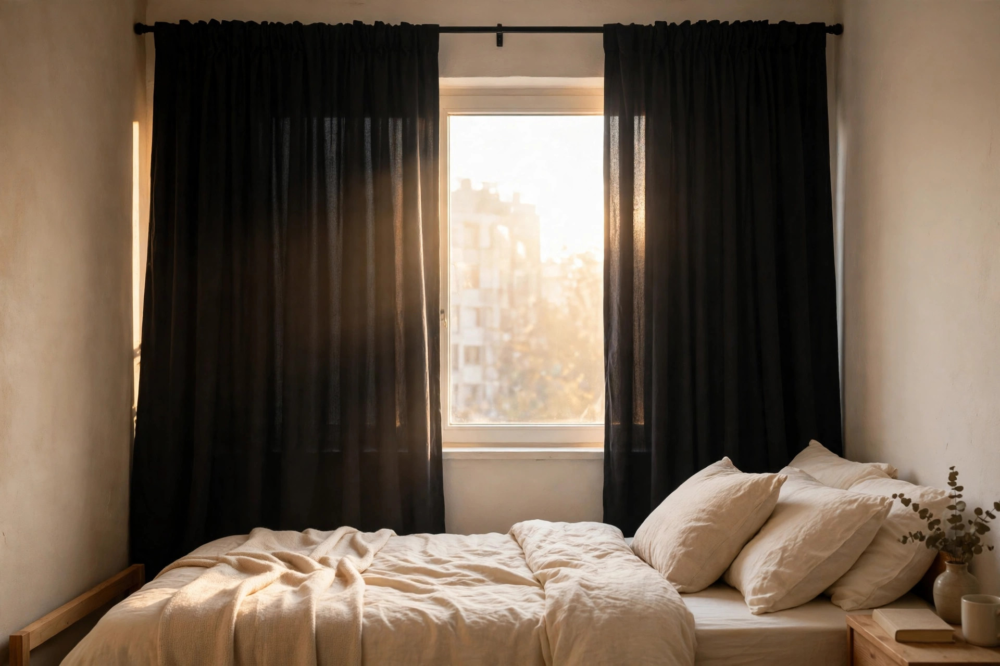

Small Bedroom
Small Bedroom Curtain Ideas for Better Sleep
Intro
Curtains do more in a bedroom than cover a window — they decide how well you sleep. Light leaking in at 5 am, street lights at night, a cold draught from the glass: the right curtains fix all three, and they do it for less than a new mattress or a blackout blind. Most of these ideas cost $10–$35, and several cost nothing at all.
This guide has 12 curtain ideas for small bedrooms. Each one covers light, warmth or colour, and all of them work in a rented room — no drilling into the wall if you use a tension rod, and nothing permanent.

1. Blackout curtains, hung properly — $20–$35
Blackout curtains only work if they are bigger than the window: hang them 10–15 cm wider than the window on each side and 10 cm below the ceiling. The extra fabric blocks the light that leaks around the edges, which is where most morning light comes in. One pair is enough for a small window, and the room will be dark enough to sleep past sunrise.
2. A double layer: sheer by day, blackout by night — $25–$35
Two rods, or one double rod: a sheer curtain for the day and a blackout curtain for the night. The sheer lets light through while keeping the room private, and the blackout closes at bedtime. It is the best of both worlds, and it costs only the price of one extra panel.
3. Curtains in a dark, warm colour — $15–$25
Dark curtains — navy, forest green, charcoal, deep terracotta — block more light than pale ones, even without a blackout lining. They also make the room feel cosy at night, which helps you wind down. Keep the bedding light so the room does not feel dark in the morning.
4. Hang the rod high and wide — $0
Move the curtain rod up to 10 cm below the ceiling and 10–15 cm wider than the window on each side. Higher, wider curtains make the window — and the room — look bigger, and they cover more of the wall so less light leaks in. This costs nothing if you reuse the same rod and curtains, and it is the single best free trick on this list.
5. A tension rod inside the window frame — $8–$12
A tension rod wedges inside the window frame with spring pressure — no screws, no holes, no landlord problems. Hang a blackout panel from it, close behind the main curtains, and the light gap disappears. It comes out in seconds when you move, and it fits most standard windows.
6. Thermal curtains for cold windows — $20–$30
Thermal curtains have a thick lining that stops cold air coming through the glass. In a small bedroom with one outside wall, they can make the room feel 2–3 degrees warmer at night, which means better sleep and a lower heating bill. They are heavier than normal curtains, so use a strong rod or a tension rod rated for the weight.
7. Tiebacks for the morning, closed at night — $5–$8
Tiebacks or simple fabric ties hold the curtains open in the morning so the room gets light, and let them close fully at night. A pair of tiebacks costs about $5, and they stop the curtains from bunching in the middle of the window where light leaks through. Keep them simple — a cord or a strip of the same fabric.
8. A sheer curtain behind the blackout — $10–$15
A sheer panel behind the blackout curtain softens the light in the morning and gives the window a finished look when the blackout is open. It also stops the room looking bare in the daytime, which matters in a small bedroom where the window is the main feature. One sheer panel is enough.
9. Washable curtains, always — $15–$25
Bedroom curtains collect dust, and dust affects sleep. Choose curtains you can wash in a normal machine — cotton, polyester, or a cotton blend — and wash them every two months. Avoid dry-clean-only fabrics in a bedroom. Washable curtains last longer, and the room smells fresher too.
10. A curtain that covers the whole wall — $20–$30
In a very small bedroom, hang curtains across the whole wall behind the bed, not just the window. The fabric softens the room, hides marks on the wall, and makes the room feel taller and calmer. It also blocks draughts from the whole wall, not just the window. One wide panel, floor to ceiling, is enough.
11. Match the curtains to the bedding — $0–$15
Curtains that match one colour in the bedding — a cushion, a throw, a duvet cover — make the room look planned and calm, which helps you relax at night. You do not need new curtains for this: a cushion cover in the same colour as the curtains does the same job for about $10.
12. Check the light gaps before you buy — $0
Before you spend anything, wait until dark, close the curtains, and look for the light leaking in — around the edges, at the top, through the fabric. Most sleep problems come from one gap, not from the curtains themselves. Fix the gap first — a wider rod, a longer panel, a tension rod — and you may not need new curtains at all.
Conclusion
Better sleep in a small bedroom usually starts at the window, not at the mattress. Blackout fabric, a high and wide rod, and one fixed light gap cost about $30 together, and they change how dark, warm and calm the room feels at night. Hang the curtains high, close the gaps, and let the room do the rest.
Budget recap
Blackout curtain pair: ~$25
Tension rod for the light gap: ~$10
Tiebacks: ~$5
**Total for a sleep-friendly window: ~$40 — cheaper than one bad night's sleep.**
Pinterest pin titles
Pinterest pin titles (3 fresh pins, same article, different designs)
- "Small Bedroom Curtain Ideas for Better Sleep"
- "Sleep Better: 12 Curtain Ideas for Small Bedrooms"
- "12 Bedroom Curtain Tricks That Block Light and Keep You Warm"